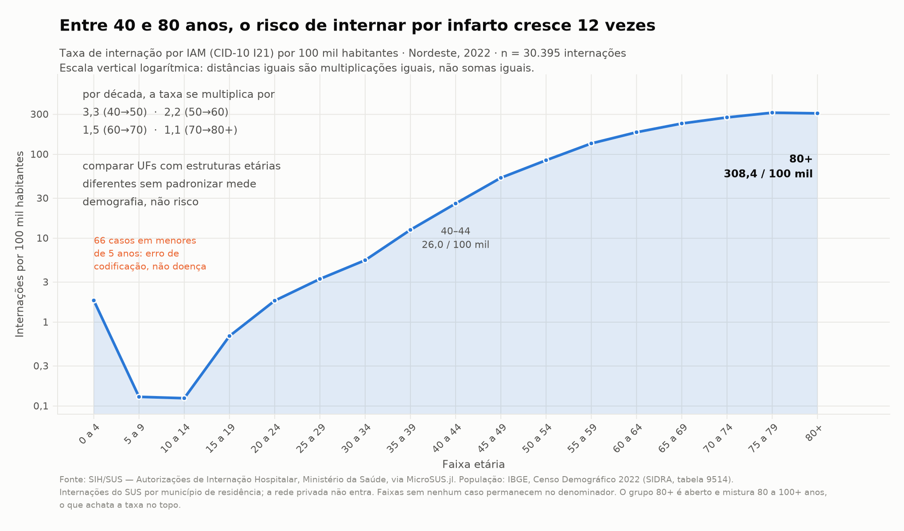
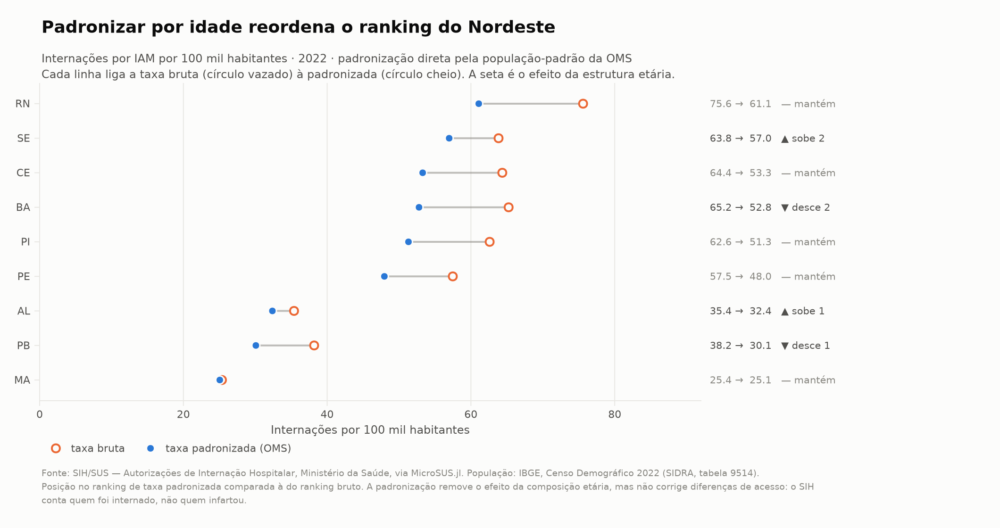
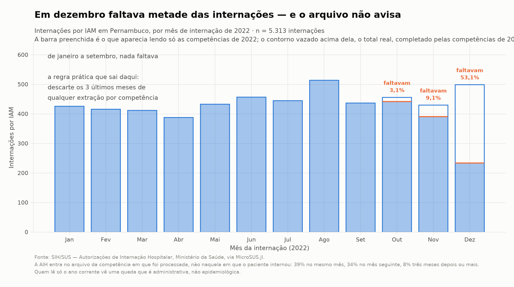
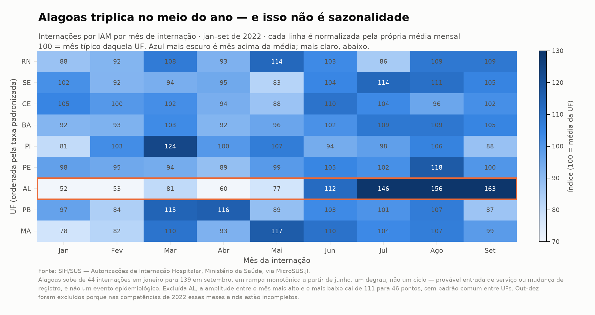

Exemplos intermediários: análises de ponta a ponta
Esta página pressupõe que você já rodou os Exemplos práticos (iniciantes) e conhece DataFrames.jl — groupby, combine, leftjoin. O que muda aqui não é a dificuldade do código: é o objeto. Lá a pergunta era "como chamo a função"; aqui é "como faço a análise certa".
As armadilhas são o conteúdo. Um campo que existe mas está vazio, um denominador que perde as faixas etárias sem casos, uma série que cai 53% em dezembro por motivo administrativo — nada disso gera erro. O código roda, o gráfico sai bonito e o número está errado.
O fio condutor é um só: internações por infarto agudo do miocárdio (IAM, CID-10 I21) no Nordeste em 2022, do SIH/SUS.
As seções compartilham estado e rodam em ordem: iam nasce na seção 2, pop na seção 5. O pipeline inteiro, executável de uma vez, está em docs/exemplo_intermediario.jl no repositório — todos os números desta página saíram de uma execução dele. Custo: ~250 MB e cerca de dois minutos na primeira vez; depois o cache do Scratch.jl resolve.
Reprodutibilidade, antes de tudo
O DATASUS republica bases retroativamente. A mesma consulta feita hoje e daqui a seis meses pode devolver números diferentes, sem aviso. Antes de qualquer análise que vá virar publicação:
using Pkg, Dates
Pkg.status() # versões exatas em uso
println("extração: ", today()) # registre e guarde no material suplementarFixe o ambiente com Project.toml e Manifest.toml — o segundo prende a árvore inteira de dependências e é o que torna o ambiente reconstituível com Pkg.instantiate(). Guarde a data de extração junto do resultado. Se o baixar emitir @warn sobre dados preliminares (PRELIM/), isso vai para a nota de rodapé da tabela.
1. Vários anos e UFs: o layout muda debaixo dos pés
Pergunta: quero uma série de internações por IAM de 2010 a 2022. Posso empilhar os arquivos e seguir?
Não sem olhar antes. O layout do SIH mudou três vezes no período:
using MicroSUS
for ano in (2010, 2011, 2013, 2014, 2022)
c = baixar(:sih, "PE"; anos = [ano], meses = [6], quieto = true)[1]
campos = Set(Symbol(x.nome) for x in cabecalho(c).campos)
println(ano, ": ", length(campos), " campos DIAGSEC1? ", :DIAGSEC1 in campos)
end2010: 86 campos DIAGSEC1? false
2011: 93 campos DIAGSEC1? false
2013: 95 campos DIAGSEC1? false
2014: 113 campos DIAGSEC1? true
2022: 113 campos DIAGSEC1? truecabecalho lê só o cabeçalho — não descomprime os registros. Verificar o layout de treze anos custa menos de um segundo, e é o primeiro comando que você deveria rodar em qualquer estudo multi-ano.
Os nove campos DIAGSEC1–DIAGSEC9 passaram a existir em 2014. Uma série 2010–2022 que conte "IAM em qualquer posição diagnóstica" vai dar um salto em 2014 que não é epidemiológico: é o formulário que mudou.
O fetch_datasus concatena com cols = :union, então colunas ausentes viram missing em vez de erro — cômodo, e perigoso: o salto passa despercebido.
O que pode dar errado aqui
- Empilhar anos com layouts diferentes sem inspecionar: a variável que você quer pode simplesmente não existir na primeira metade da série.
- Confundir "campo ausente" com "valor ausente".
missingporque a coluna não existia em 2010 emissingporque o hospital não preencheu são coisas diferentes e exigem tratamentos diferentes. - A alternativa honesta, quando o campo não existe no período inteiro: restringir a série ao período com layout comparável (aqui, 2014 em diante) ou usar só o diagnóstico principal, que existe em todos os anos.
2. Diagnóstico e procedimento: onde o recorte engana
Pergunta: filtrar por DIAG_PRINC == I21 subestima os casos de infarto?
A resposta usual é "sim, porque ignora os diagnósticos secundários". Vamos medir em vez de supor.
O filtro roda dentro do leitor: campos não pedidos nunca viram String, e linhas rejeitadas não materializam coluna nenhuma. É o que torna viável varrer a região inteira.
using MicroSUS, DataFrames
const NE = ["AL","BA","CE","MA","PB","PE","PI","RN","SE"]
const CAMPOS_DIAG = [:DIAG_PRINC, :DIAG_SECUN,
(Symbol("DIAGSEC$i") for i in 1:9)...]
# O `filtro` consulta os campos pelo nome, então precisa saber quais existem
# neste arquivo — `cabecalho` responde sem descomprimir nada. (Para a lista de
# `colunas`, `ignorar_ausentes = true` resolve sozinho; o filtro é que não tem
# como adivinhar.)
"Campos diagnósticos que existem de fato no layout deste arquivo."
diag_presentes(caminho) = filter(∈(keys(cabecalho(caminho).indice)), CAMPOS_DIAG)
function carregar_iam(ufs, ano, meses, colunas)
partes = DataFrame[]; lidas = 0
for uf in ufs
for c in baixar(:sih, uf; anos = [ano], meses = meses, quieto = true)
lidas += cabecalho(c).n_registros
campos = diag_presentes(c)
df = DataFrame(ler(c; colunas = colunas, ignorar_ausentes = true,
filtro = r -> any(startswith(r[k], "I21") for k in campos)))
df.UF = fill(uf, nrow(df))
push!(partes, df)
end
end
vcat(partes...; cols = :union), lidas
endinternações lidas no Nordeste 2022: 3.321.519
IAM (I21 em qualquer posição): 30.809
tempo: 48,8 sCusto: 108 arquivos, ~250 MB baixados, 49 segundos, 3,3 milhões de registros varridos para materializar 30 mil. Um mês de PE lido inteiro (113 colunas) ocupa 96 MB de RAM; as 22 colunas de que precisamos ocupam 3,2 MB. Pedir colunas é a diferença entre caber e não caber no notebook.
O que os campos secundários realmente contêm
df = DataFrame(ler(baixar(:sih, "PE"; anos=[2022], meses=[6], quieto=true)[1];
colunas = [:DIAG_SECUN, :DIAGSEC1]))
unique(String.(df.DIAG_SECUN)) # ["0000"]
count(isempty, String.(df.DIAGSEC1)) # 36183 de 48562Dois achados que mudam o recorte:
DIAG_SECUNé"0000"em 100% dos 3,3 milhões de registros de 2022. Quem filtrar por ele encontra zero e pode concluir que não há diagnóstico secundário nenhum.DIAGSEC1está preenchido em 15,6% das internações. Em 2022 os secundários reais vivem emDIAGSEC1–DIAGSEC9.
Mas "campo morto" é conclusão apressada — e é aqui que a série longa cobra o preço. Medindo o preenchimento em junho de cada ano, em Pernambuco:
| ano | DIAG_SECUN | DIAGSEC1 |
|---|---|---|
| 2008 | 6,1% | não existe |
| 2010 | 6,9% | não existe |
| 2013 | 12,4% | não existe |
| 2014 | 14,5% | 0,0% (existe, vazio) |
| 2015 | 0,0% | 17,3% |
| 2022 | 0,0% | 17,6% |
DIAG_SECUN era o campo vivo até 2014. O bloco DIAGSEC1–DIAGSEC9 aparece no layout de 2014 ainda vazio e assume em janeiro de 2015, quando o antigo zera. A troca é limpa e datável.
A consequência para quem monta série longa: usar só um dos dois quebra a série ao meio. Contando apenas DIAGSEC1, tudo antes de 2015 dá zero; contando apenas DIAG_SECUN, tudo depois de 2014 dá zero. O recorte correto é a união dos dois, e o campo a consultar muda com o ano.
E o efeito sobre a contagem depende inteiramente da doença:
| Recorte | Só principal | Qualquer posição | Acréscimo |
|---|---|---|---|
| IAM (I21) | 30.395 | 30.809 | +1,4% |
| Diabetes (E10–E14) | 44.001 | 51.310 | +16,6% |
O infarto é motivo de internação: entra como principal. O diabetes é comorbidade: entra como secundário em uma internação por outra coisa. A regra não é sobre o código, é sobre como aquela condição é registrada — e você precisa medir isso para o seu recorte antes de decidir.
Procedimento realizado
p = String.(df.PROC_REA)
count(==("0303060190"), p) # 2.861 — tratamento clínico do IAM
count(startswith("0406"), p) # 1.686 — hemodinâmica/cirurgia cardiovascularEm Pernambuco, 2022: 55% das internações por IAM tiveram procedimento clínico, 32,4% algum procedimento do grupo 0406 (inclui angioplastia).
A letalidade hospitalar foi de 6,7% com procedimento 0406 e 9,9% sem.
O que pode dar errado aqui
Ler essa diferença como efeito do tratamento é o erro clássico. Quem recebe angioplastia é selecionado duas vezes: sobreviveu até chegar ao serviço e chegou a um hospital que tem hemodinâmica. Comparar os dois grupos mede seleção, não eficácia.
Códigos de procedimento e de município têm zeros à esquerda. Se você salvar um recorte em CSV e reler sem forçar
String,"0406030022"vira406030022e todostartswithfalha em silêncio. (Aconteceu na preparação desta página.)Não deixe o round-trip por CSV definir os seus tipos. Até a v0.2.1 o schema
:sihtipavaIDADE,DIAS_PERMeVAL_TOT, mas devolviaCOD_IDADE,ANO_CMPT,MES_CMPTeMORTEcomo texto.sum(df.MORTE)não fazia o que parecia, ecod == 4comparavaString3comInt, devolviafalseem silêncio e descartava a base inteira sem erro nenhum.Isto derrubou a primeira versão desta página: os números tinham sido calculados sobre um cache em CSV, onde o
CSV.jlfazia a conversão por conta própria, de modo que o código publicado não os reproduziria.Desde a v0.3.0 os quatro campos vêm tipados e o problema não existe mais:
df = DataFrame(ler(caminho)) eltype(df.MORTE) # Union{Missing, Int32} sum(skipmissing(df.MORTE)) # agora faz o que pareceA lição sobrevive à correção: confira
eltypedo que você recebe em vez de deduzir do nome da coluna, e desconfie de qualquer número que só apareça depois de passar por CSV.
3. Join com o IBGE: a pegadinha dos 6 e 7 dígitos
Pergunta: quero o nome do município de residência e a região. Basta juntar MUNIC_RES com a tabela do IBGE?
Não: SIM, SINASC e SIH gravam município com 6 dígitos; o IBGE usa 7. O sétimo é um dígito verificador, e a conversão ingênua cod6 * 10 está errada.
using MicroSUS, DataFrames, HTTP, JSON3
j = JSON3.read(String(HTTP.get(
"https://servicodados.ibge.gov.br/api/v1/localidades/municipios").body))
# nem todo município traz `microrregiao` (alguns vêm com null); o caminho
# `regiao-imediata` cobre esses casos
function uf_de(m)
mr = get(m, :microrregiao, nothing)
mr !== nothing && return (String(mr.mesorregiao.UF.sigla),
String(mr.mesorregiao.UF.regiao.nome))
ri = get(m, Symbol("regiao-imediata"), nothing)
ri !== nothing && return (String(ri[Symbol("regiao-intermediaria")].UF.sigla),
String(ri[Symbol("regiao-intermediaria")].UF.regiao.nome))
(missing, missing)
end
ufs = uf_de.(j)
mun = DataFrame(cod7 = [m.id for m in j], municipio = [String(m.nome) for m in j],
uf_sigla = first.(ufs), regiao = last.(ufs))municípios do IBGE: 5571 (1 sem microrregiao na API)Agora a conversão correta e o join:
codigo7_ibge("261110") # 2611101 — Petrolina/PE
# cod6 * 10 daria 2611100, que não existe
iam.cod7 = codigo7_ibge.(iam.MUNIC_RES)
j2 = leftjoin(iam, mun, on = :cod7, makeunique = true)
count(ismissing, j2.municipio) # 11 de 30.395Quanto isso importa, medido nos dados:
códigos de município distintos : 1.701
se alguém fizer cod6*10 em vez de codigo7_ibge : casariam 4.960 de 30.395 (16,3%)
órfãos após o join correto : 11 linhas (0,036%)
códigos órfãos : 2611531, 2201911, 2202257cod6 * 10 acerta 16,3% das linhas — exatamente aquelas cujo dígito verificador calha de ser zero. O resto se perde num leftjoin silencioso, ou, pior, num innerjoin que descarta 84% da base sem dizer nada.
Os três códigos órfãos não existem na tabela atual do IBGE: são municípios extintos, desmembrados ou erro de digitação na AIH. São 0,036% e podem ser descartados — mas contados e declarados, nunca removidos em silêncio.
O que pode dar errado aqui
- Usar
innerjoinem vez deleftjoin: você perde linhas e onrowfinal não denuncia quantas. - Não conferir
count(ismissing, ...)depois do join. Um join que falha em 84% das linhas continua rodando sem erro. - Campos de município podem vir vazios ou como
UF9999("município ignorado"). Neste recorte não havia nenhum, mas verifique:filter(c -> length(c) == 6 && c[3:6] != "9999", codigos). - Municípios criados depois da base, ou extintos antes dela, não casam em nenhuma direção. Em séries longas isso obriga a compatibilizar territórios.
Os oito maiores municípios de residência, depois do join:
Fortaleza CE 1879 Natal RN 337
Salvador BA 1424 São Luís MA 335
Recife PE 1028 João Pessoa PB 330
Teresina PI 554 Maceió AL 327São as capitais, e isso já é um aviso: o SIH registra o município de residência, mas a internação de alta complexidade acontece na capital. Municípios pequenos com baixo registro podem estar exportando pacientes, não tendo menos infarto.
4. Cruzar SIH e SIM: o que o pareamento não resolve
Pergunta: quantas pessoas morreram de infarto no Nordeste em 2022, e quanto disso o SIH enxerga?
São dois sistemas sem identificador comum. Não há como parear indivíduos: o que dá para fazer é comparar agregados e interpretar a diferença.
using MicroSUS, DataFrames, Tables
function obitos_iam(ufs, ano)
d = Dict{String,Int}()
for uf in ufs
c = baixar(:sim, uf; ano = ano, quieto = true)
n = 0
for lote in Tables.partitions(ler(c; colunas = [:CAUSABAS],
filtro = r -> startswith(r[:CAUSABAS], "I21")))
n += Tables.rowcount(lote)
end
d[uf] = n
end
d
endSIM — óbitos com causa básica I21 (NE 2022) : 26.795
SIH — internações por IAM : 30.395
SIH — óbitos hospitalares nessas internações : 3.243
letalidade hospitalar : 10,7%
razão SIM / óbitos hospitalares do SIH : 8,26O SIM registra oito vezes mais óbitos por infarto do que o SIH captura como morte hospitalar. E os 26.795 óbitos equivalem a 88% do total de internações: a maioria das mortes por IAM não passou por uma internação do SUS pelo mesmo motivo.
Três razões somam essa diferença, e nenhuma delas é erro do dado:
- Morte súbita fora do hospital — no infarto é o desfecho mais comum antes de qualquer atendimento.
- A rede privada não está no SIH, mas todos os óbitos estão no SIM. Numerador e denominador vêm de universos diferentes.
- A causa básica do óbito é uma decisão de codificação feita na declaração de óbito, independente do diagnóstico da AIH. Uma internação codificada como I21 pode gerar óbito com causa básica I50 (insuficiência cardíaca) e vice-versa.
O que pode dar errado aqui
- Calcular "letalidade do infarto" dividindo óbitos do SIM por internações do SIH. Os dois números não compartilham população de referência; o resultado (88%) não significa nada clínico.
- A letalidade hospitalar de 10,7% é a única razão defensável aqui — numerador e denominador saem do mesmo registro. Mesmo ela mede gravidade e perfil de quem chega ao hospital.
- Sem identificador comum, qualquer pareamento indivíduo a indivíduo (record linkage por data de nascimento, sexo, município) é probabilístico e precisa reportar taxa de acerto. Não é o que se faz num
leftjoin.
5. Taxas por 100 mil e padronização por idade
Pergunta: qual UF do Nordeste interna mais por infarto?
Contagem não responde: Bahia tem quase três vezes a população do Piauí. É preciso taxa — e a taxa bruta ainda não resolve, porque a estrutura etária difere entre as UFs e o risco de infarto depende fortemente da idade.
O denominador
using HTTP, JSON3, DataFrames
# Censo 2022 (SIDRA 9514). Atenção: nesta tabela NÃO existe a categoria
# "80 anos ou mais" — o topo é aberto em 80-84, 85-89, 90-94, 95-99 e 100+.
# Usar o id de "80 ou mais" de outra tabela devolve vazio e some com
# ~4,6 milhões de idosos.
const FAIXAS_SIDRA = ["93070","93084","93085","93086","93087","93088","93089",
"93090","93091","93092","93093","93094","93095","93096","93097","93098",
"49108","49109","60040","60041","6653"]
url = "https://apisidra.ibge.gov.br/values/t/9514/n3/all/v/93/p/2022/c2/6794" *
"/c287/" * join(FAIXAS_SIDRA, ",") * "/c286/113635"
linhas = JSON3.read(String(HTTP.get(url).body))[2:end]
# a checagem que salva a análise
@assert sum(parse.(Int, String.(getindex.(linhas, "V")))) == 203_080_756Sempre confira o total do denominador contra o valor publicado. Na primeira tentativa desta página o somatório deu 198.493.802 em vez de 203.080.756 — a diferença de 4,6 milhões era exatamente a população de 80 anos ou mais, perdida por usar um identificador de faixa que não existe nessa tabela. O código não dava erro.
A direção do join importa
casos = combine(groupby(iam_p, [:UF, :faixa]), nrow => :casos)
# ERRADO: partir dos casos elimina do denominador toda faixa sem nenhum caso
base = leftjoin(casos, pop, on = [:UF => :uf, :faixa => :faixa])
# CERTO: partir da população garante a grade completa
base = leftjoin(filter(:uf => ∈(NE), pop), casos, on = [:uf => :UF, :faixa => :faixa])
rename!(base, :uf => :UF)
base.casos = coalesce.(base.casos, 0)
@assert nrow(base) == 9 * 17 # 9 UFs × 17 faixas
@assert sum(base.casos) == nrow(iam_p)| população somada | taxa bruta do Nordeste | |
|---|---|---|
| join partindo dos casos | 49.934.006 | 60,9 / 100 mil |
| join partindo da população | 54.658.515 | 55,6 / 100 mil |
O primeiro perde 4,7 milhões de pessoas — as faixas jovens, que não têm infarto — e infla a taxa em 9%. O @assert de grade completa custa uma linha e teria pego o erro na hora.
Por que padronizar

Escolhi escala logarítmica porque o objeto é uma razão: entre 40 e 80 anos a taxa se multiplica por 12, e numa escala linear tudo abaixo dos 50 anos vira uma linha colada no eixo. A anotação registra que o crescimento desacelera (3,3× por década dos 40 aos 50, mas 1,1× dos 70 aos 80+) — o que uma reta mental de "dobra a cada década" erraria.
Repare nos 66 casos de IAM em menores de 5 anos, com taxa 14 vezes maior que a da faixa de 5 a 9 anos. Não é doença: é erro de codificação. Fica no gráfico porque descartar em silêncio é pior que mostrar.
Padronização direta
# População-padrão da OMS (Ahmad et al. 2001), por 100 mil. Normalizada para
# somar 1: a tabela publicada soma 100.035 por arredondamento.
const OMS = Dict(zip(FAIXAS, [8860,8690,8600,8470,8220,7930,7610,7150,6590,
6040,5370,4550,3720,2960,2210,1520,1545]))
const W = Dict(k => v / sum(values(OMS)) for (k, v) in OMS)
base.taxa_esp = 1e5 .* base.casos ./ base.pop
base.peso = [W[f] for f in base.faixa]
res = combine(groupby(base, :UF)) do g
(; casos = sum(g.casos), pop = sum(g.pop),
bruta = 1e5 * sum(g.casos) / sum(g.pop),
padronizada = sum(g.taxa_esp .* g.peso))
end
A decisão metodológica e a alternativa. Usei a população-padrão da OMS porque torna o resultado comparável com a literatura internacional. A alternativa é padronizar pela população do próprio Nordeste, que preserva melhor a magnitude local mas só permite comparar UFs entre si. Ambas são defensáveis; o que não é defensável é não dizer qual foi usada — a escolha do padrão muda os valores absolutos, ainda que raramente mude a ordenação.
Outra escolha: denominador do Censo 2022 para o numerador de 2022. Ano de numerador igual ao de denominador, população enumerada e não projetada. Para uma série temporal isso não serve, e aí a alternativa são as projeções do IBGE — com a ressalva de que a revisão de 2018 superestima em ~6% depois do Censo.
O que pode dar errado aqui
- Padronizar corrige composição etária, não acesso. O Maranhão tem 25,1 por 100 mil padronizado contra 61,1 do Rio Grande do Norte. Interpretar isso como "menos infarto no Maranhão" é quase certamente errado: o SIH conta quem foi internado, e a diferença de 2,4 vezes reflete rede hospitalar e hemodinâmica disponível.
- Taxa de internação não é incidência. Reinternações do mesmo paciente contam duas vezes; quem morre antes de chegar não conta nenhuma.
- Faixas com poucos casos produzem taxas específicas instáveis que a padronização amplifica pelo peso. Com 9 UFs e 30 mil casos isso não é problema; num recorte municipal, é.
6. Série mensal: o atraso de digitação trunca o fim
Pergunta: houve queda de internações por infarto no fim de 2022?
Depende de quando você leu o arquivo — e essa é a resposta errada que um dado deveria nunca dar.
A AIH entra no arquivo da competência em que foi processada, não naquela em que o paciente internou. DT_INTER é a data da internação; ANO_CMPT/ MES_CMPT, a da competência. A distância entre as duas é o atraso:
ip.atraso = [round(Int, Dates.value(c - firstdayofmonth(d)) / 30.44)
for (d, c) in zip(Date.(ip.DT_INTER), Date.(ip.ANO_CMPT, ip.MES_CMPT, 1))]0 mês : 11.945 (39,3%) 3 meses : 2.354 (7,7%)
1 mês : 10.459 (34,4%) 4 meses : 423 (1,4%)
2 meses: 5.111 (16,8%) ≥5 meses: 103Só 39% das AIH entram no mês da internação. A consequência é direta: ler apenas as competências de um ano trunca os últimos meses desse ano. Para medir o tamanho do buraco, basta ler o ano seguinte e comparar:
so2022 = iam_por_competencia("PE", [2022])
ate2023 = iam_por_competencia("PE", [2022, 2023])
Dezembro aparecia com 234 internações e tinha 499 — faltava 53%. Novembro, 9,1%. Outubro, 3,1%. De janeiro a setembro, nada faltava.
A regra prática que sai daqui: descarte os três últimos meses de qualquer extração por competência, ou leia o ano seguinte para completar. A alternativa mais rigorosa, quando a série é o objeto do estudo, é modelar o atraso e corrigir (nowcasting), reportando intervalo de incerteza para os meses recentes.
O que pode dar errado aqui
- A queda de dezembro tem exatamente a aparência de um achado epidemiológico. Nada no arquivo avisa que está incompleto.
- O atraso não é estável: varia por UF, por hospital e por ano, e piora em períodos de crise administrativa. Meça no seu recorte, não use os 39% desta página como constante.
- Usar
ANO_CMPT/MES_CMPTcomo se fossem a data do evento resolve o truncamento e cria outro problema: a série passa a medir processamento administrativo, não ocorrência.
7. Comparar UFs ao longo do ano
Pergunta: existe sazonalidade no infarto no Nordeste?
mm = combine(groupby(filter(:mes => ≤(9), ip), [:UF, :mes]), nrow => :n)
mm = leftjoin(mm, combine(groupby(mm, :UF), :n => mean => :media), on = :UF)
mm.indice = 100 .* mm.n ./ mm.media # 100 = mês típico daquela UFNormalizei cada UF pela própria média mensal porque o objeto da pergunta é o padrão temporal, não o nível: sem isso a Bahia domina o gráfico por ser grande e nenhum padrão fica visível. Escolhi heatmap em vez de nove linhas sobrepostas porque com nove séries de mesma escala o emaranhado esconde justamente o que interessa.
Só janeiro a setembro — aplicando a lição da seção anterior. Incluir outubro a dezembro desenharia uma "queda de fim de ano" que é o truncamento, não o inverno.

A resposta à pergunta é não — e o gráfico entrega outra coisa no lugar.
Alagoas sai de 44 internações em janeiro para 139 em setembro, em rampa monotônica a partir de junho: 2,24 vezes mais no segundo semestre que no primeiro. Isso não é um ciclo, é um degrau. A forma — subida sustentada sem retorno — descarta sazonalidade e aponta para entrada de serviço novo, habilitação de leito ou mudança de registro. Investigar exigiria olhar o campo CNES e ver se apareceram estabelecimentos novos no meio do ano.
Excluída Alagoas, a amplitude entre o mês mais alto e o mais baixo de qualquer UF cai de 111 para 46 pontos, sem padrão comum entre estados.
O que pode dar errado aqui
- Um degrau administrativo lido como achado epidemiológico é o erro mais caro desta página, porque produz uma narrativa plausível ("aumento de infartos em Alagoas") que sobrevive à revisão.
- Distinguir os dois é uma questão de forma: sazonalidade sobe e volta; mudança de registro sobe e fica. Uma série de dois ou três anos separa os casos; um ano isolado, não.
- Normalizar pela própria média esconde o nível. Este gráfico não diz que Alagoas interna pouco ou muito — para isso é a figura da seção 5.
Atritos da API encontrados nesta análise
Levantados enquanto a página era escrita; viram sugestão de melhoria do MicroSUS.jl:
Escrever esta página serviu de teste de uso do pacote. Dois dos atritos encontrados foram corrigidos na v0.3.0; três continuam de pé.
Corrigidos
| Atrito | Correção |
|---|---|
Tipagem incompleta do schema :sih — MORTE era :pool apesar de ser tipo N no DBF, e COD_IDADE/ANO_CMPT/MES_CMPT nem constavam do schema | Os quatro agora são :inteiro |
Faltava process_sih — o SIM tinha IDADE_ANOS pronto, o SIH exigia combinar IDADE + COD_IDADE na mão | process_sih e idade_sih, aplicados por fetch_datasus(:SIH_RD) |
| Pedir coluna inexistente era erro fatal — colunas = [:DIAGSEC1] derrubava a leitura de 2010 | ler(...; ignorar_ausentes = true) | | cabecalho era API interna, apesar de ser a primeira coisa que toda análise multi-ano faz | Exportada e documentada na referência pública | | DIAG_SECUN some sem aviso a partir de 2015 | Documentado no guia de schemas e na tabela acima |
Nenhum atrito conhecido em aberto no momento — os cinco viraram as mudanças da v0.3.0.
Para onde ir agora
- Leitura:
ler, filtro, partições — processar em lotes quando nem o recorte cabe na memória. - Conversão para Arrow — o caminho recomendado para projetos multi-ano: converta uma vez, consulte sempre.
- Dimensões: IBGE e CID-10 —
capitulo_cid10,eh_agressaoe os detalhes do dígito verificador. - Referência da API.